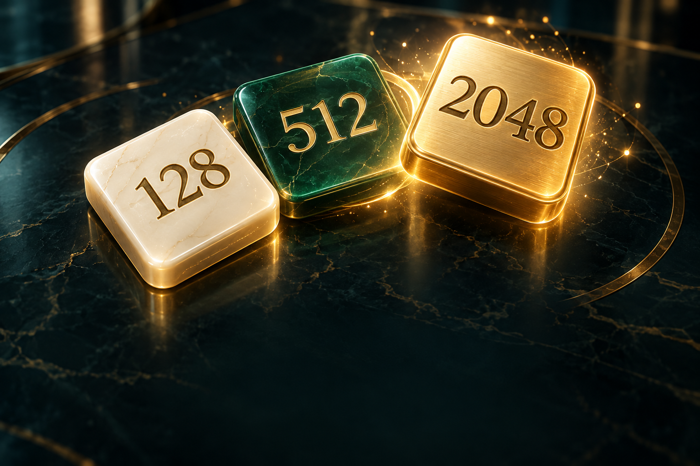

ЛОГИКА · ОДИН ИГРОК
2048.
Маленький ход.
Большое число.

Ваш личный вызовРекорд на этом устройстве
04 × 4 · без таймера
СЛЕДУЮЩИЙ ХОД — ВАШ
2048.
СЧЁТ0
ЛИЧНЫЙ РЕКОРД0
ХОДЫ0
Путь к 20482 / 2048
Далее 2Падающие числа
Смахните в любую сторону. Одинаковые числа складываются.
Партия сохраняется автоматически на этом устройстве